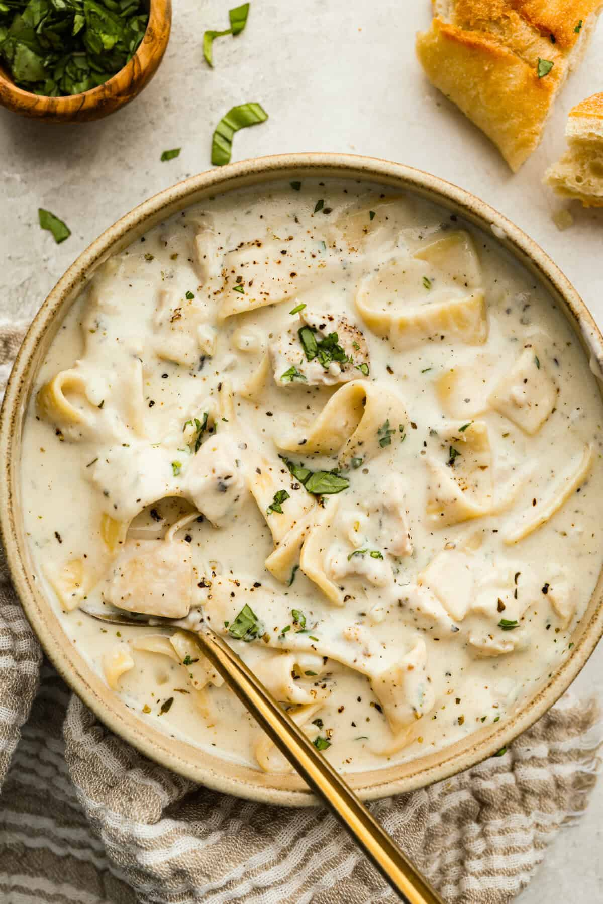

Chicken Alfredo Soup image" height="500" width="670">image source: Chicken Alfredo Soup
Chicken alfredo soup is a very flavorful take on regular chicken noodle soup! It comes out thick and creamy,
and Parmesan cheese adds a nice flavor. Think comfort in a bowl
Ingridients and recipes sources: allrecipes